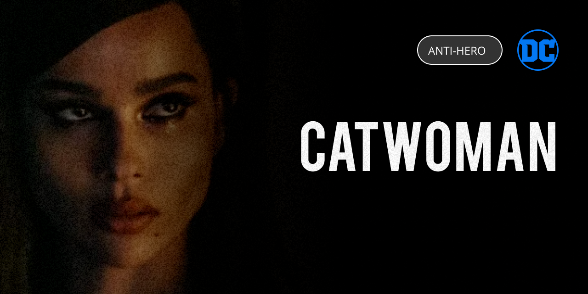

Catwoman
A burglar in Gotham City who usually wears a skintight bodysuit and uses a bullwhip for a
weapon. She is portrayed as an antiheroine, often with a utilitarian moral philosophy.
Bio
Full Name: Selina Kyle
Place Of Birth: America, Gotham City
Alignment: Morally grey
Gender: Female
Race: Human
Power Stats
Intelligence: 100%
Strength: 100%
Speed: 100%
Durability: 80%
Power: 30%
Combat: 100%